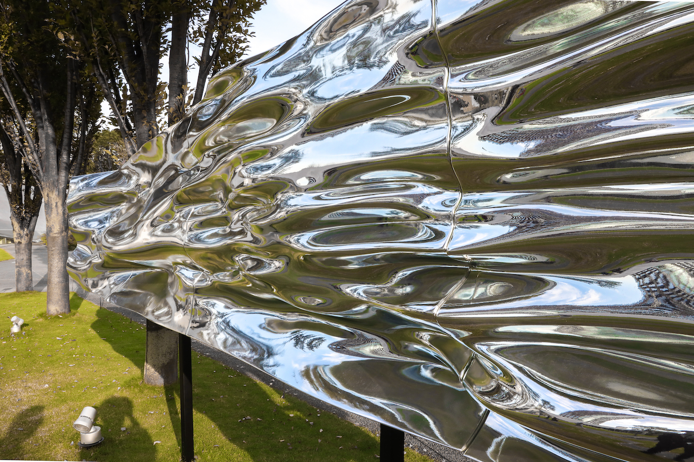

Moment
時間をテーマとした彫刻。事前にDESIGN TOUCH 2019の会場の風を計測し、人の目では捉えることのできない瞬間の風の形を可視化、彫刻として表現した。
「普段は目に見えない「一瞬」という時間の概念が、有形物として目の前に現れたとき、鑑賞者はその時間のもつ意味に、改めて向き合うことになります。」TOKYO MIDTOWN DESIGN TOUCH 2019 「 Moment | DESIGN TOUCH 2019 」より
-
- sculpture


Credits
アーティスト : 脇田玲
コンセプト : 脇田玲 、藤谷菜未
プランナー : 中里洋介（博展）
デザイナー : 青栁龍桂（博展）
制作管理 : 大武小夏（博展） / 澤田雅之（博展）
リサーチ : 石井健 / 中村光一
プロデューサーテキスト : 藤谷菜未
主催 : 東京ミッドタウン
Links
制作協力 : HAKUTEN（博展）